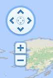
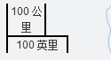
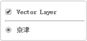
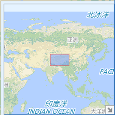

地图应用"Hello World"
获取开发包
下载 SuperMap iClient 8C(2017) for JavaScript 压缩包文件，解压安装包文件于本地磁盘，解压后的安装包结构如下：
创建HTML显示页面
在磁盘上任意位置新建文件夹并自定义该文件夹，本例命名为"MyFirst"；在 "MyFirst"文件夹下用文本编辑工具（如NotePad++）新建一个"GettingStarted.html"的 html 页面，注意将该 html 页面保存为 UTF-8 编码格式，并添加入以下代码：
<!DOCTYPE HTML>
<html>
<body onload="init()">
<!--地图显示的div-->
<div id="map" style="position:absolute;left:0px;right:0px;width:800px;height:500px;" >
</div>
</body>
</html>
引用资源文件
分两步引用资源：
- 将第一步得到的 theme 文件夹拷贝到"MyFirst"文件夹下；
- 拷贝libs文件夹到"MyFirst"文件夹下；
添加地图创建代码
在<html>和<body>之间添加如下代码，实现创建地图功能。
<head>
<title>SuperMap iClient for JavaScript:TiledDynamicRESTLayer</title>
<!--引用需要的脚本-->
<script src="./libs/SuperMap.Include.js"></script>
<script type="text/javascript">
//声明变量map、layer、url
var map, layer,
url = "http://localhost:8090/iserver/services/map-world/rest/maps/World";
//创建地图控件
function init() {
map = new SuperMap.Map ("map");
//创建分块动态REST图层，该图层显示iserver 8C 服务发布的地图,
//其中"world"为图层名称，url图层的服务地址，{transparent: true}设置到url的可选参数
layer = new SuperMap.Layer.TiledDynamicRESTLayer("World", url,
null, {maxResolution:"auto"});
layer.events.on({"layerInitialized": addLayer});
}
function addLayer() {
//将Layer图层加载到Map对象上
map.addLayer(layer);
//出图，map.setCenter函数显示地图
map.setCenter(new SuperMap.LonLat(0, 0), 0);
}
</script>
</head>
使用浏览器运行查看
启动 SuperMap iServerJava 8C 并运行 GettingStarted.html 文件，浏览地图数据。
地图控件
地图控件概述
控件用来控制地图的显示和对交互操作的响应，在没有明确指定的情况下，地图默认添加Navigation、PanZoomBar控件。在SuperMap iClient for Javascript地图API中提供了丰富的控件，下面举例说明：
具有显示界面控件有如下：
| PanZoomBar： 地图平移缩放控件，提供对地图的平移和缩放的控制操作，默认位于地图左上角 |  |
| ScaleLine： 比例尺控件，显示地图的比例关系，默认位于地图左下角 |  |
| LayerSwitcher： 地图图层切换控件，可以查看图层信息和控制图层显示，默认位于地图右上角 |  |
| OverviewMap：地图鹰眼控件，辅助查看地图更大范围的显示，默认位于右下角，可折叠 |  |
- 不可见控件有如下：
- Navigation：地图浏览控件，监听鼠标点击、平移、滚轮等事件来实现对地图的浏览操作。
- SelectFeature：要素选择控件，监听鼠标悬停，点击事件来选择vector图层上面的要素。
- DrawFeatue： 要素绘制控件，监听鼠标事件来实现要素的绘制。
- ……
控件使用
向地图添加控件有两种方式，其一可以通过在初始化构造Map的时候，设置Map的controls属性来添加控件。代码如下：
var map = new SuperMap.Map('map', {controls: [new SuperMap.Control.PanZoomBar()]});
也可以在Map构造完成后，调用接口Map的接口addControl()来添加控件。下面示例中，在map构建完成后添加比例尺控件：
var map = new SuperMap.Map('map');
map.addControl(new SuperMap.Control.ScaleLine());
修改控件显示位置
对于显示控件，我们可以在添加控件的时候通过设置addControl接口的第二参数px来设置控件显示相对于地图左上角的像素位置，不可见控件不支持该操作。
下面的代码中，修改默认的ScaleLine控件的位置为（800,400）：
var map = new SuperMap.Map('map');
map.addControl(new SuperMap.Control.ScaleLine(), new SuperMap.Pixel(800,400));
地图图层
地图图层概述
图层用来承载地图信息的显示。地图可以添加一个或者多个图层，组合显示用户所需要的最终效果。SuperMap iClient for JavaScript提供了丰富的图层，分别对应不同的地图服务和客户端展示需求，支持的图层如下：
- TiledDynamicRestLayer： 动态分块图层，用来对接SuperMap iServer 8C的分块动态REST图层服务。
- CloudLayer：云图层，用来显示SuperMap云服务发布的图层。
- SimpleCachedLayer：缓存图层，用来显示SuperMap iServer 8C的缓存图层(Version3.1)。
- WMS： 该图层用来显示OGC地图服务的地图数据。
- WMTS： 用来显示基于OGC WMTS 1.0.0标准实现的地图服务的地图数据。
- Vector： 矢量要素渲染图层。
- Markers：标签图层。
- OpenLayers提供的其他第三方图层...
添加图层
使用map的addLayer()、addLayers()方法可以添加图层到map上,其中，addLayers()方法可添加多个图层，即图层数组。
针对图层的添加，需要分两种情况进行考虑：
一种是需要异步加载信息的图层，异步加载的图层需要监听图层构建完成的layerInitialized事件，在图层初始化完成后才能调用addLayer()接口添加到Map上。TiledDynamicRestLayer就属于需要异步加载的图层，它通过设置url向服务端发送请求来得到相关参数，进而加载图层到Map上。
示例，添加TiledDynamicRestLayer到地图上：
var map, layer,
url = "http://localhost:8090/iserver/services/map-world/rest/maps/World";
function init(){
//初始化地图
map = new SuperMap.Map("map");
//初始化图层
layer = new SuperMap.Layer.TiledDynamicRESTLayer("World", url, null,{maxResolution:"auto"});
//监听图层信息加载完成事件
layer.events.on({"layerInitialized":addLayer});
}
//异步加载图层
function addLayer(){
map.addLayer(layer);
//显示地图范围
map.setCenter(new SuperMap.LonLat(0, 0), 0);
}
另一种则是不需要异步加载信息的图层，此类图层在初始化的时候由用户设置相关信息，初始化之后直接添加地图中便可显示。除去 TiledDynamicRestLayer 之外的图层都属于此类，以WMS添加为例：
var map, layer,
url = "http://localhost:8090/iserver/services/map-world/wms130/World Map";
function init(){
//初始化地图
map = new SuperMap.Map("map");
//初始化图层
layer = new SuperMap.Layer.WMS("World Map",url,{layers: "0.12,0.8"});
map.addLayer(layer);
//显示地图范围
map.setCenter(new SuperMap.LonLat(0, 0), 2);
}
移除图层
移除地图的使用map.removeLayer()接口，没有差异化操作：
map.removeLayer(layer);
图层样式
图层样式概述
图层的样式相关类有 Symbolizer 类、Style类、StyleMap 类，其中，
- Symbolizer： 用于要素渲染的样式基类, 其特点是样式只针对具体的点、线、面等对象，一般不需要用户构建，而是由 Style 创建出来，内部在使用的时候通过 css 或者 canvas 的画笔控制来显示不同效果。
- Style：样式类，定义某种状态的完全样式，点、线、面等全部包括在内。如果在构造 Style 时没有设置 style 属性，则会使用 SuperMap.Feature.Vector 的默认风格。
- StyleMap：图层样式，定义多种状态下的图层样式，其属性 styles 类型为 SuperMap.Style，存储了由 key(‘state’), value(‘Style’) 组成的状态-样式键值对构成的信息。StyleMap 信息被赋予到使用样式显示的 Vector 图层，默认支持四种样式 "default", "temporary", "select", "delete"。
图层样式使用
1.图层样式定义
(1)直接设置状态-样式键值对，需要注意的是，只有定义样式的状态才具有样式，未定义的状态的样式其样式 style 为 null。如下示例，只 default 和 select 两个状态的样式 所以仅仅这两个状态有样式，另外两种状态 temporary、delete 的样式为 null，代码如下所示：
var myStyles = new SuperMap.StyleMap({
"default":new SuperMap.Style({
fillColor:"#ffcc33",
strokeColor:"#ccff99",
strokeWidth:2,
graphZIndex:1
}),
"select":{
fillColor:"33eeff",
strokeColor:"3366aa",
graphicZIndex:2
}
});
(2)直接设置单一 style，依照此方式定义样式之后，四种状态都有下面的 style 样式, 实现代码如下：
var myStyles = new SuperMap.StyleMap( new SuperMap.Style({ fillColor:"#ffcc33", strokeColor:"#ccff99", strokeWidth:2, graphZIndex:1 }) );
(3)直接传入样式信息参数，依照此方式定义样式之后，四种状态都有下面的 style 样式, 实现代码如下：
var myStyles = new SuperMap.StyleMap({
fillColor:"#ffcc33",
strokeColor:"#ccff99",
strokeWidth:2,
graphZIndex:1
});
(4)当默认支持的四种状态不能满足用户需求时，用户也可自定义状态及其样式，代码如下：
var myStyles = new SuperMap.StyleMap({
"default":new SuperMap.Style({
fillColor:"#ffcc33",
strokeColor:"#ccff99",
strokeWidth:2,
graphZIndex:1
}),
"click": new SuperMap.Style({
fillColor:"33eeff",
strokeColor:"3366aa",
graphicZIndex:2
})
});
2.图层的样式使用
定义样式之后，可通过以下两种方式使用：
(1)通过设置 SuperMap.Layer.Vector 的 style（Object 对象） 或者 styleMap（key: Style对象）样式。代码如下：
Var vectorLayer = new SuperMap.Layer.Vector("Vector Layer", {styleMap: myStyles});
(2)通过设置 SuperMap.Feature.Vector 的样式 Style 属性获得样式
Var vectorLayer = new SuperMap.Layer.Vector("Vector Layer");
feature = new SuperMap.Feature.Vector();
feature.style = new SuperMap.Style({
strokeColor: "#304DBE",
strokeWidth: 1,
pointerEvents: "visiblePainted",
fillColor: "#304DBE",
fillOpacity: 0.8,
pointRadius:2
}) ;
vectorLayer.addFeatures(feature);
地图覆盖物
地图覆盖物概述
我们把叠加到地图上标注、矢量图层元素、弹窗信息等内容统称为地图覆盖物。覆盖物拥有自己的地理坐标，会在地图浏览的过程中伴随着地图同时移动。当前支持的覆盖物有以下几种：
- Vector： 矢量元素覆盖物，配合Geometry和Style，可以以丰富的形式展示点、线、面等地理矢量图形，需要添加到Vector图层上显示。
- Marker： 标签覆盖物，对地图上的点进行标准，可以自定义选择标注的图标，需添加到Markers图层上显示。
- Popup： 信息窗口覆盖物，提供更灵活的信息展示能力，在弹窗中可以自定义信息的展示。
矢量图形覆盖物Vector
矢量图形覆盖物vector在定义的时候必须指明定对应的地理矢量图形Geometry。样式Style属性可选，如果指定则默认获取要素所在vector图层设置的style样式。
下面的示例定义一个点矢量图形覆盖物，没有设置样式，显示默认效果：
//构造geometry对象
var point = new SuperMap.Geometry.Point(0,0);
//构建覆盖物对象
var pointVector = new SuperMap.Feature.Vector(point);
修改点样式为红色填充，黄色边框：
//构造geometry对象
var point = new SuperMap.Geometry.Point(0,0);
//构建覆盖物对象
var pointVector = new SuperMap.Feature.Vector(point);
//修改点样式红色
pointVector.style = {fillColor: "red",strokeColor: "yellow",pointRadius:6};
使用Vector图层的addFeatures(),removeFeatures(),removeAllFeatueres()可以实现对矢量图形要素的添加显示和移除。下面的示例从构建地图、图层到最后添加覆盖物的完整流程：
var map, layer, vectorLayer,
url = "http://localhost:8090/iserver/services/map-world/rest/maps/World";
function init(){
//初始化地图
map = new SuperMap.Map("map");
//初始化图层
layer = new SuperMap.Layer.TiledDynamicRESTLayer("world", url, null, {maxResolution:"auto"});
layer.events.on({"layerInitialized":addLayer});
vectorLayer = new SuperMap.Layer.Vector();
}
function addLayer(){
map.addLayers([layer,vectorLayer]);
//显示地图范围
map.setCenter(new SuperMap.LonLat(0, 0), 0);
addFeature();
}
function addFeature(){
var point = new SuperMap.Geometry.Point(0,0);
var pointVector = new SuperMap.Feature.Vector(point);
//添加矢量图形覆盖物
vectorLayer.addFeatures(pointVector);
}
事件
事件概述
浏览器机制中的JavaScript事件驱动是完成用户交互的主要方法。通过监听事件，并在事件上注册事件监听的处理方法，可以在事件被激活的时候获取用户的操作信息，调用事件监听器上的代码进行响应处理。
SuperMap iClient for JavaScript 拥有一个自己的自定义事件模型，用来处理地理API中定义的事件(如layer的layerInitialized事件)。使用Events来处理自定义事件的过程和普通的浏览器事件处理流程基本相似。
浏览器事件注册监听
SuperMap iClient for Javascript地图API提供了公共的方法来帮助开发者解决注册监听浏览器事件时候的跨浏览器兼容问题。使用SuperMap.Event.observe()和SuperMap.Event.stopObserving()方法来处理对浏览器事件的监听，使用SuperMap.Function.bind()和SuperMap.Function.bindAsEventListener()方法来解决事件处理在跨浏览器时候的参数和this对象不一致问题。关于接口的具体信息请参考API描述。
下面示范代码对一个div对象注册监听鼠标点击事件：
function init(){
var div = document.createElement("div");
document.body.appendChild(div);
div.innerText = "点击测试";
//将处理函数和调用对象绑定，函数最终调用里面的this对象即指向第二个参数指定的object对象
var observeFun = SuperMap.Function.bindAsEventListener(clickHandler, div);
//监听div的click事件，处理函数为observeFun，即最终的clickHandler
SuperMap.Event.observe(div, "click",observeFun);
}
function clickHandler(event){
//this对象指向绑定的object，即DIV本身
alert(this.innerText);
}
使用自定义事件
自定义事件机制的核心类是SuperMap.Events，该类提供了事件监听、触发的相关方法：
- register()：注册事件监听到事件处理队列的尾端。
- registerPriority()：注册优先事件监听，即添加到事件处理队列的最前面。
- on()：注册事件监听，参数为一个由事件/事件处理函数组成的键值对对象。
- unregister()：移除事件监听。
- un()：移除事件监听，参数同on()。
- triggerEvent()：触发（派发）自定义事件。
在Map、Layer、SelectFeature控件等以及其他可操作类中，我们都内置了events对象来实现对自定义事件的注册监听处理，layer的异步加载就是一个很好的示例。下面我们分别演示使用register()和on()方法来实现对图层异步加载完成事件的监听处理，最终效果一样：
//使用on()接口监听事件
layer.events.on({"layerInitialized": addLayer});
//使用register()接口监听事件
layer.events.register("layerInitialized", undefined, addLayer)
使用unregister()和un()来移除事件的使用方法也很简单，示范代码如下：
//使用un()接口监听事件
layer.events.un({"layerInitialized": addLayer});
//使用unregister()接口监听事件
//layer.events.unregister("layerInitialized", undefined, addLayer)
定义用户自己的事件
使用地图API中的自定义事件机制，开发者也可以定义属于自己的事件类型和处理。使用的时候需要初始化一个events对象，然后调用该对象完成事件的相关处理。下面示例中，我们点击div对象触发一个自定义的事件"userselect"，然后监听events监听来完成：
var div;
function init(){
div = document.createElement("div");
div.innerText = "点击测试";
document.body.appendChild(div);
//初始化一个events。定义事件的监听器和自定义事件名称
var events = new SuperMap.Events(div, div, ["userselect"]);
//将事件对象保存到div对象上
div.events = events;
//监听自定义事件，注册处理函数，参数一指定事件类型，参数二指定事件处理对象，参数三定义处理函数
div.events.register("userselect", div, userselectHandler)
//将处理函数和调用对象绑定，函数最终调用里面的this对象即指向第二个参数指定的object对象
var observeFun = SuperMap.Function.bindAsEventListener(clickHandler, div);
SuperMap.Event.observe(div, "click",observeFun);
}
function clickHandler(event){
//this对象指向绑定的object，即DIV本身
this.events.triggerEvent("userselect", event);
}
//响应自定义事件处理
function userselectHandler(event){
alert(this.innerText + event.type);
}
地图服务
地图服务概述
地图服务是指对地图提供的量算、查询、分析等服务的统称，Supermap iClient for JavaScript核心库中提供了对接SuperMap iServer 8C相关服务所需的类和接口。目前已对接的服务有：
- MapService服务：地图信息服务类，用来获取服务器上提供的地图服务的详细信息 。
- Mesure服务：量算服务，提供地图上距离，面积的的量算功能。
- Data服务：对接iServer相关数据查询，编辑等服务。
- Query服务：地图查询服务。
- NetworkAnalyst服务：网络分析服务。
- SpatialAnalyst服务：空间分析服务。
- Theme服务：专题图服务
- LayerServices服务：图层服务类，提供图层信息的获取和对临时图层的修改设置。
- TrafficTransferAnalyst服务：交通换乘服务类。
地图服务使用流程
地图服务在使用的过程中一般会用到以下相关类：服务类Service，参数类Parameter，事件服务数据类EventArgs，结果信息类Result。使用流程也围绕这四个类的使用展示，下面以MeasureService为例逐步说明：
构建服务参数类
服务参数类提供服务请求所需的信息，不同服务具有不同的信息需求，MeasureParameters类提供量算的查询参数封装，所需的参数有geometry和unit，定义量算的几何对象和单位，代码如下：
var measureParam = new SuperMap.REST.MeasureParameters();
//设置量算查询的矢量对象，geometry可以通过用户绘制，查询结果，直接初始化等方法获取
measureParam.geometry = geometry;
mesureParam.unit = SuperMap.REST.Unit.MILE;
构建服务类并发送请求
服务类负责向服务端发送请求，并将查询结果返回封装到对应的服务结果类中。使用服务类指定服务URL等服务参数，向服务端发送请求信息，然后通过监听服务请求完成事件，从事件服务数据类中获取最终的结果Result对象，按照用户需求进行处理，代码如下：
//初始化服务类，设置服务请求关键参数
var myMeasuerService = new SuperMap.REST.MeasureService(URL);
myMeasuerService.measureMode = SuperMap.REST.MeasureMode.DISTANCE;
//注册服务请求完成事件
myMeasuerService.events.on({ "processCompleted": measureCompleted });
//提交服务请求，传递服务查询参数
myMeasuerService.processAsync(measureParam);
使用结果类
在服务请求事件的处理过程中，我们可以获取结果信息并予以展示，下面使用弹窗的形式展示量算结果：
//在每个服务对应的结果事件中，我们都封装了其返回结果结果信息，如MeasureEventArgs.result
function measureCompleted(measureEventArgs) {
//result为MeasureResult类型，
var distance = measureEventArgs.result.distance,
area = measureEventArgs.result.area,
unit = measureEventArgs.result.unit;
if (distance != -1) {
alert(distance + "米");
} else if (area != -1) {
alert(area + "平方米");
}
}
交通换乘服务
交通换乘简介
交通换乘的目的便是为用户的出行提供准确、及时、优化的公交信息服务， 用户可以对现有的公交站点、公交线路、进行查询，通过输入任意出行起点、 终点，交通换乘系统可在相应的约束条件下，查找搜索出公交出行路线和换乘方案， 用户根据自己的需要选择合适的出行方案，极大的方便了人们出行和生活。
交通换乘接口使用方法
交通换乘的方法如下：一，首先定义起始站点和终点站点名查询函数； 二，进行交通换乘查询，首先需在客户端设置用于向服务 端发送的交通换乘参数，其次定义交通换乘服务， 用于向服务端发送请求并从服务端获得交通换乘结果数据， 最后将返回的结果在客户端进行展示。
下面以长春交通数据模拟的公交线路数据为例，用户通过输入起始站点名 （支持模糊查询）可查找出相关匹配的站名，范例提供了时间最短、 距离最短、最少换乘、最少步行四种换乘策略类型，同时提供了地铁优先、不乘坐地铁、公交优先、NONE四种乘车偏好设置，用户可根据自己 的需要选择最为合适的出行路线。
1、交通站点查询
使用方式如下：
（1）定义站点查询参数stopQueryParameters,需要设置的参数有keyWord 和 returnPosition；
（2）定义站点查询服务stopQueryService。此函数监听了processCompleted，processFailed两个事件， processAsync方法向服务端发送请求，当请求成功时会触发processCompleted事件，请求返回结果失败会触发processFailed事件。
实现代码如下所示：
function execStopQuery() {
//设置站点查询参数
var params = new SuperMap.REST.StopQueryParameters({
keyWord: "园", // 站点名称关键字
returnPosition: true //是否返回站点坐标信息
});
//定义站点查询服务。设置服务url地址,同时监听stopQuerySucceed和stopQueryFailed两个事件
var stopQueryService = new SuperMap.REST.StopQueryService(url, {
eventListeners: {
processCompleted: stopQuerySucceed,
processFailed: stopQueryFailed
}
});
// 向服务端发送请求，返回请求结果
stopQueryService.processAsync(params);
}
//站点查询成功回调函数
function stopQuerySucceed(stopQueryEventArgs) {
//todo
}
//站点查询失败回调函数
function stopQueryFailed(serviceFailedEventArgs) {
//todo
}
2、交通换乘方案查询
交通方案查询：该方法返回所有的乘车方案，根据方案中的介绍信息可以获取具体的乘车路线。实现过程首先需要设置交通换乘参数，需要设置的参数包括solutionCount、transferTactic、transferPreference、walkingRatio、points，定义交通换乘服务函数，通过此函数的processAsync方法向服务端发送请求并从服务端获得交通换乘结果数据。该函数监听了processCompleted和processFailed两个事件，服务端返回查询结果失败时触发 processFailed 事件,服务端成功返回查询结果时触发 processCompleted 事件。
实现代码如下所示：
//定义公交换乘方案查询
function execTransSolutionsQuery() {
//配置公交换乘方案查询参数
var params = new SuperMap.REST.TransferSolutionParameters({
solutionCount: 6,//最大换乘导引数量
transferTactic: SuperMap.REST.TransferTactic.LESS_WALK,//公交换乘策略类型
transferPreference: SuperMap.REST.TransferPreference.NONE,//乘车偏好
walkingRatio: 10,//步行与公交的消耗权重比
points: points //起始点坐标
});
// 配置公交换乘服务,监听两个事件，processCompleted和processFailed,服务端成功返回查询结果时触发
//processCompleted 事件，服务端返回查询结果失败时触发 processFailed 事件。
var solutionService = new SuperMap.REST.TransferSolutionService(DemoURL.traffic_transfer, {
eventListeners: {
processCompleted: transferSolutionsSucceed,
processFailed: transferSolutionsFailed
}
});
//execute
solutionService.processAsync(params);
}
//执行公交换乘方案成功返回结果
function transferSolutionsSucceed(transferSolutionEventArgs) {
//TODO
}
//执行公交换乘方案失败返回
function transferSolutionsFailed (serviceFailedEventArgs) {
//TODO
}
3、乘车路线查询
根据换乘方案查询结果（transferSolutions）得到的乘车方案，获取某一条乘车路线的详细信息。
实现代码如下所示：
function execTransferPathQuery() {
//设置乘车线路参数
var params = new SuperMap.REST.TransferPathParameters({
points: points, //起始点坐标
transferLines: [transferLine] //当前换乘路线，包含路线ID、起止点等。
});
// 配置乘车路线查询服务,监听两个事件，processCompleted和processFailed,服务端成功返回查询结果时触发
//processCompleted 事件，服务端返回查询结果失败时触发 processFailed 事
var transPathService = new SuperMap.REST.TransferPathService(DemoURL.traffic_transfer, {
eventListeners: {
processCompleted: transferPathSucceed,
processFailed: transferPathFailed
}
});
//执行查询
transPathService.processAsync(params);
}
//成功返回结果时调用此函数
function transferPathSucceed(transferPathEventArgs) {
//TODO
}
//返回结果失败时调用此函数
function transferPathFailed(serviceFailedEventArgs) {
//TODO
}
3.执行交通换乘查询，提供了最短时间、最短距离，少步行、少换乘四种不同策略的方案查询。
四种不同策略查询：
（1）时间最短查询
//设置最短距离交通换乘路线策略
SuperMap.REST.TransferTactic.LESS_TIME;
（2）最少步行查询
//设置最少步行交通换乘路线策略
SuperMap.REST.TransferTactic.LESS_WALK;
（3）少换乘查询
//设置少换乘交通换乘路线策略
SuperMap.REST.TransferTactic.LESS_TRANSFER;
（4）最短距离
//设置最短距离交通换乘路线策略
SuperMap.REST.TransferTactic.MIN_DISTANCE;
3.设置交通换乘查询，提供了地铁优先、公交优先，不乘坐地铁、NONE四种不同偏好的方案查询。
四种不同偏好查询：
（1）地铁优先
//设置地铁优先交通换乘路线偏好
SuperMap.REST.TransferPreference.SUBWAY;
（2）公交优先
//设置公交优先交通换乘路线偏好
SuperMap.REST.TransferPreference.BUS;
（3）不乘地铁
//设置不乘地铁交通换乘方案偏好
SuperMap.REST.TransferPreference.NO_SUBWAY;
（4）最短距离
//无偏好设置
SuperMap.REST.TransferPreference.NONE;
示例效果展示
这里仅展示少换乘查询结果效果图， 其中起始站点为绿园，终点站点为儿童广场，查询效果图如下所示：
坐标投影转换
坐标投影转换概述
JavaScript提供的坐标投影转换类---SuperMap.Projection 用于在客户端进行投影变换，这个类封装了与 Pro4js 投影对象进行交互的方法。
其中，Proj4js 是一个JavaScript 脚本库，用来进行坐标投影转换，详细介绍请参见 Proj4js 官网，地址如下:http://trac.osgeo.org/proj4js/
目前 Proj4js 支持的投影种类有：WGS84, EPSG:4326, EPSG:4269, EPSG:3875, EPSG:3785, EPSG4139,EPSG:4181, EPSG:4272, EPSG:4302, EPSG:21781, EPSG:102113,EPSG:26591,EPSG:26912, EPSG:27200, EPSG:27563, EPSG:41001, EPSG:42304,EPSG:102067, EPSG:102757, EPSG:102758, EPSG:900913, GOOGLE
SuperMap 默认支持 EPSG:4326, CRS:84, urn:ogc:def:crs:EPSG:6.6:4326, EPSG:900913, EPSG:3857, EPSG:102113 和 EPSG:102100 等投影间的转换。
坐标投影转换使用
客户端坐标投影转换的使用方法如下：
（1）对于SuperMap支持的投影，可用如下方法实现客户端的投影转换：
方法（一），通过设置map的 projection 和 displayProjection 属性实现，例如：
var mapOptions = {
//设置地图的投影方式
projection: "EPSG:3857",
//设置MousePosition控件的鼠标位置的需要进行的投影方式
displayProjection: "EPSG:4326"
};
var map = new SuperMap.Map('map', mapOptions);
map.addControl(new SuperMap.Control.MousePosition());
方法（二），可调用 transform() 方法进行坐标转换，例如：
var point = new SuperMap.LonLat(-71.147, 42.472);
point.transform("EPSG:3857", "EPSG:4326");
详细方法可参见范例 地图图层---地图投影转换
(2) 对于SuperMap 不支持或者用户自定义的投影
首先需要下载、解压缩 proj4 的产品包，并引入产品包中的 proj4.js 文件。
自定义投影，可通过Proj4js.defs[]静态常量定义键值对实现。有关各种投影的参数定义，可参考http://spatialreference.org；如果已有定义，可搜索并查看其投影参数，例如EPSG:21418，其投影参数为http://spatialreference.org/ref/epsg/21418/proj4/。
用户自定义一个EPSGCODE，然后再用（1）的方法调用，代码如下：
//自定义一个defs，用来实现用户自定义的投影转换。其中，EPSG:10010为自定义的EPSGCODE，键值内容为参考投影参数，其分别代表了名称、
//投影、转换到wgs84坐标系（三参数）、椭球长半轴、扁率、原点纬线、中央经线、两条标准纬线、东偏移量、北偏移量、单位等。
Proj4js.defs["EPSG:10010"] = "+title=Beijing1954 +proj=lcc +towgs84=0.0000,0.0000,0.0000 +a=6378245.0000 +rf=298.3 +lat_0=0.00000000 +lon_0=104.000000000 +lat_1=24.000000000 +lat_2=40.000000000 +x_0=0.000 +y_0=0.000 +units=m +no_defs";
var map = new SuperMap.Map({
div: "map",
//设置地图的投影方式
projection: "EPSG:3857",
//设置MousePosition控件的鼠标位置的需要进行的投影方式
displayProjection: new SuperMap.Projection("EPSG:10010")
});
map.addControl(new SuperMap.Control.MousePosition());